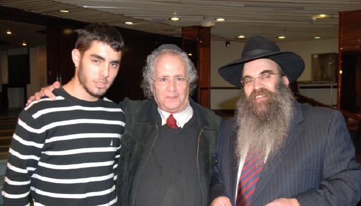

Tragedy upon Tragedy in the World of Chabad
Thousands of people in Nahariya in northern Eretz Yisroel and Chicago, Illinois owe their spiritual lives to two shluchim who dedicated their lives to drawing them close to Judaism and preparing their cities to greet Moshiach. * Numerous people sadly accompanied Rabbi Daniel Moskowitz a”h, shliach in Illinois, and R’ Yisroel Boruch Butman a”h, shliach in Nahariya at their funerals. * Ad Masai?

MULTIFACETED SHLIACH
R’ Yisroel Butman a”h was not only a shliach, but was also a father figure to everyone in his city. He touched the souls of thousands of people who are now devastated by his sudden passing.
R’ Butman served as a multifaceted shliach in Nahariya. He was one of the most dominant and beloved people in the city. Although he did not have an official government rabbinic position, he was an unofficial partner in all the important forums in the city. He was involved in everything, in the municipality, in the religious council, in the Histadrut, everything. There was hardly a soul in town that did not know him and did not have some connection or other with him. His Ahavas Yisroel and caring were felt by the many thousands of residents of the city.
R’ Butman was born on 7 Elul, 5718/1958. His parents are R’ Sholom Dovber and Mrs. Devorah Butman. When he was ten, his parents immigrated to Eretz Yisroel and settled in Tel Aviv. He learned in Yeshivas Tomchei T’mimim in Lud, in Kfar Chabad, and then in 770. After marrying his wife Shifra, daughter of the mohel, R’ Chaim Ozer Marinovsky, he learned in Kollel for about a year.
In the winter of 5742 he asked the head of Tzeirei Chabad in Eretz Yisroel, R’ Yisroel Leibov, to find him a place of shlichus. He visited various cities with the then director of branch development R’ Nachum Cohen, and finally chose the northern city of Nahariya. After receiving the Rebbe’s approval, he settled there and got down to work. It wasn’t easy at first. He later said that he was welcomed coolly, but thanks to his warm personality, he slowly began making inroads as a beloved and admired shliach.
In 5746 he opened a Kollel under the auspices of the rav of the city at the time, Admur R’ Dovid Abuchatzeira, for the purpose of increasing Torah. Over the years, he was in close touch with the Admur and the two of them did a great deal for the residents of the city.
“YOU CAUSED MUCH NACHAS RUACH”
He built a large and impressive network of preschools in which thousands of children learned over the years. He was capable of building successful schools but was particular about not encroaching on other Chabad institutions in the area, where he sent his children. Thanks to his preschools, hundreds of families were brought closer to Judaism. He used parent meetings and various gatherings as well as the parents’ connections with Chabad to draw them close to Torah and Chassidus. Many of the parents who got to see Chabad from up close began contributing toward his projects, and many even changed their lives because of their children who learned in the preschools.
Even after he took on important administrative jobs in nationwide Chabad organizations, he continued to play a major role in Chabad activities in Nahariya. He was in control of it all. There was never a situation where something was needed of him and he didn’t deliver.
In the last decade of his short life, he ran a soup kitchen which helped dozens of needy people every day. He also provided for hundreds of needy individuals before Yomim Tovim.
One time, after one of the programs he ran, he reported to the Rebbe and wrote that he hoped he gave the Rebbe nachas. The Rebbe wrote him an unusual reply, “You caused much nachas ruach. May your mind be at ease as you have put my mind at ease.”
CONNECTING TO PEOPLE OF ALL WALKS OF LIFE
R’ Butman knew how to talk to all kinds of people. He conversed regularly with distinguished rabbanim, knew the proper protocols for interacting with revered Admurim, but also knew how to speak to and understand ordinary people. He always had a good word to say to people, whoever they were, even unfortunates. A word in the right place, a smile that conveyed warmth and love. A message of encouragement or appeasement. He could sniff out who needed bread and who needed a good word, who needed to be sent a food package and who needed help.
One of the touching stories about his caring for every Jew was told by R’ Dovid Abuchatzeira, about a Jew who defended another Jew abroad, as a result of which the police wanted to arrest him.
The man fled to Eretz Yisroel for he knew that the police were determined to press charges against him. The government of that country wanted him extradited and he was placed under house arrest. He found in R’ Butman someone to whom he could pour out his heart even though they had no prior acquaintance! He called R’ Butman nearly every day and asked for his help. R’ Butman was touched by the man’s plight and considered this a mitzva of pidyon shvuyim. He used his connections with whoever could possibly help.
He spoke about this frequently with R’ Dovid Abuchatzeira and asked him to use his influence. The Admur, seeing how this so touched R’ Butman’s heart, got involved. After the court approved the young man’s extradition, the signature of the Justice Minister was needed. R’ Abuchatzeira called the minister and said, “I need you here in Nahariya urgently.” The minister arrived in Nahariya by helicopter and the three of them sat down to a meeting. The Admur said to the minister, “We have R’ Butman sitting here with us and he testifies that the man is not guilty. Do as R’ Butman says and do not sign the document.”
R’ Abuchatzeira said the reason he got so involved was because of the dedication he saw in R’ Butman who was moser nefesh for this, “to the extent that it seemed he had nothing else to do but this.”
***
A member of the Chabad house gave another example of R’ Butman’s care and concern:
“Over the past few days, there is a woman who walks around outside the Chabad house every day as though she is looking for something. I know her because for a period of time she would come to the Chabad house every day to speak with R’ Butman. I once asked him what this was about and he told me that she had come to Nahariya from abroad with her son after a difficult divorce. She reached the point where she had nothing to eat and was nearly evicted from her apartment.
“‘I couldn’t bear this so I helped her with a place to live,’ said R’ Butman. ‘She continued coming every day to the Chabad house to ask for food. I also spoke to her and cheered her up.’ Since his passing, she continues to come to the Chabad house and walks around and around without knowing what to do and to whom to pour out her heart.”
R’ Butman saved the spiritual and physical lives of many people. One time, a woman walked into the Chabad house and said that her daughter was dating an Arab and wanted to marry him. As she spoke, she pulled out a loaded gun, waved it about, and said that if her daughter married the Arab, she would use the gun.
R’ Butman calmed her down and got involved in the matter. He spent hours talking to the girl. Eventually, she not only left the Arab but also did t’shuva and now has a beautiful Jewish home.
Many people say that R’ Butman was there for them at critical junctures of their lives. One of them was R’ Mutty Cohen, a Chabad Chassid in Nahariya and director of the kashrus division of the rabbanut of Nahariya:
“I was born in Nahariya in an irreligious home. I ended up in Crown Heights between 5748 and 5751 and then returned to Eretz Yisroel but wasn’t a full-fledged Lubavitcher. R’ Butman is the one who helped me with the finishing touches. He made my shidduch and later found me a job as a mashgiach for kashrus for one of the biggest kashrus organizations in Eretz Yisroel. He later arranged my present job as director of the kashrus division of the rabbanut of Nahariya.
“Until today, I cannot understand how he managed to get me into a Chabad sirtuk. I won’t forget that day when I was a chassan and he took me with him to Tel Aviv. He took me to his father who sold fabric, on Rechov Yaffo I think, and there I saw a special scene of two elderly Chassidim, his father and another older Chassid, sitting among the fabrics and learning Chassidus in the middle of the day. On that trip he bought for me a hat and sirtuk, and that is how he eased me into it with his characteristic light touch.
“At every significant point in my life, he was there. At times of joy and family events and hard times. For me, his loss is an enormous void.”
R’ Butman was a unique blend of powerful personality traits; as much as he was “Rav Butman,” he was also “Srulik.” He was gifted with a rare degree of humanity and great warmth. He had a way with people. He knew how to touch their hearts. From the many people who knew him you hear the same line, “R’ Butman? He was my best friend.”
There was hardly a person in Nahariya that did not have some encounter with him, whether on happy occasions or funerals, in cases where people needed help or just his taking an interest. Now, with his passing, his loss is greatly felt. During the days he was in intensive care, many people came to visit him. Employees of the hospital of all backgrounds, doctors, professionals, security guards, and even their spouses went to his room. All of Nahariya asked, “What’s doing with R’ Butman?” Now there is a great vacuum.
Jackie Sebbag, mayor, had this to say, “I had the privilege and honor to know R’ Butman. A special person, greatly accomplished, one who generated many positive initiatives for the benefit of the residents of Nahariya. The municipality of Nahariya worked closely with the rav and made sure to fulfill his requests.
“R’ Butman founded a network of preschools and fought to have more preschools approved. He opened a soup kitchen for the needy. He helped families in need, especially before holidays. He would celebrate with and inspire the members of the community on holidays in the amphitheater of Nahariya. During the Second Lebanon War, he worked in close collaboration with the municipality and helped people in bomb shelters and safe rooms.
“One of the outstanding characteristics of R’ Butman was his ability to draw hearts close together. He left his imprint on the city and its residents, on religious and irreligious alike. They all loved him.”
In the last week of his life, the mayor insisted that R’ Butman appear at the Chanukas Ha’bayis and mezuza placing ceremony on the new sports stadium in the Katznelson school. R’ Butman told the secretary that he would not be able to make it because he had promised to attend a yahrtzait gathering.
A few minutes later, she called back and said that the mayor said, “Only R’ Butman will come to put up the mezuza.” R’ Butman did attend and their joint picture standing near the mezuza was seen in all the city papers that last week of his life. It was a sort of parting from the most influential man in the city.
DIRECTOR OF THE RESHET OHOLEI YOSEF YITZCHOK
In 5756, after the passing of R’ Meir Freiman, the director of the Chabad network of government religious schools Reshet Oholei Yosef Yitzchok, R’ Dovid Chanzin, asked him to take over. He took on the difficult challenge and threw himself into the work for eighteen years, until his passing.
For years, he made countless trips on Reshet matters, whether to tour schools or to see senior officials in their offices at the Education Ministry where they greatly respected him.
R’ Butman told about one of his first experiences in running the Reshet:
“When I first started running the Reshet, I went with R’ Dovid Chanzin to the school in Givat Ada where we met the principal, Perla Volosov. Together, we visited the classrooms. When we arrived at the teachers’ room, R’ Chanzin asked her where was the room for the male teachers. She said there were no male teachers at the school.
“Afterward, he took me aside and said, ‘R’ Yisroel, boys attend this school but there are no male teachers. See to it that you bring in male teachers and arrange a teachers’ room for them.”
***
At the beginning of Adar, R’ Butman had a heart attack and after a brief hospitalization, he passed away on Friday night, Parshas VaYikra, 6 Adar II, at the age of 55. He is survived by his wife and children Chaim Ozer, Menachem Mendel, Shneur Zalman and daughter Mussia, as well as his parents, brothers and sister Mrs. Michla Segal.
This Shabbos was very difficult for the Chabad community in Nahariya. Shabbos morning, people heard the news. The children of the community sat in the entrance to the shul, children of about seven and eight, all of them stunned or crying. The davening did not have its usual Shabbos sweetness. When it was time to review a sicha of the Rebbe, R’ Yisroel did not get up from his place.
“Seeing his empty place was terrible,” said one of the people who daven there. “Who will dance on the tables on Simchas Torah? Who will go up on the bima and direct everything the way he always did?” Questions with no answers.
Residents of Nahariya find it hard to accept this tragedy and regard it as their personal tragedy. It is a tremendous loss. Everyone knew him in some way. He had a very wide circle of acquaintances.
The mayor sent a letter of condolence to the family and the Chabad community, “We are shocked and pained by the untimely passing of a friend and dear rav from our lives. It is hard to speak of R’ Butman in the past tense. Last Sunday, hundreds of people were present when he did his final mitzva and put up a mezuza in the new sports stadium. Then we heard about the heart attack. We all prayed that he overcome it and return to us in good health and long life. At my weekly visit to the hospital on Friday, I visited him and left with much hope for good news and his recovery. Unfortunately, this was not to be. Nahariya and its residents bow their heads in great sadness.”
S.Z. Levin. "Tragedy upon Tragedy in the World of Chabad." Beis Moshiach, no. 920 (March 20, 2014).